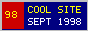

| Rosa Garcia ~rgarcia@cs.redwood.edu | Soda 510-C | ICQ #24910382 |
 |
Ph.D. student building deterministic lexical tokenizers and rule-based sentence splitters for noisy HTML web crawls.
| Workstation: SPARCstation 5 / Perl 5.004 + Standard ML Offline Hours: Entering Austin-style five-alarm chili cookoffs across the CS department. |
| Fall 1998 Desk & Reading: Catch me in the fourth-floor Soda Hall grad cluster late evenings, or run finger on cs.redwood.edu to read my .plan file. Keeping Stevens UNIX Network Programming, three 1.44 MB floppies, and an open xterm beside the CRT. |
$text =~ s/<[^>]+>/ /g;
my @tokens = grep { length($_) > 1 } split /[^a-z0-9]+/, lc($text); |
Never tokenize HTML without stripping script and comment tags first.
| My Bookmarks & Campus Links -- Sites and projects linked from Rosa Garcia's hotlist: |